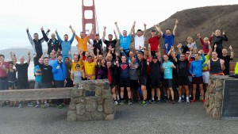
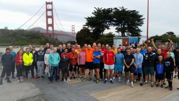
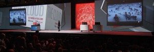
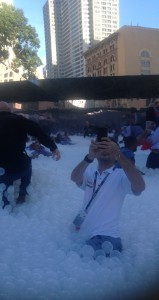
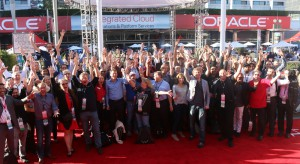
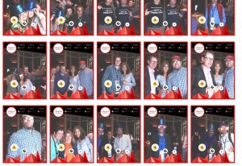

Here are the two sides of the Oracle Open World: marketing and community. Of course Oracle organizes that big event for marketing: show the future products and explain how they are better than all competitors ones. But it’s not only that. There is a community around Oracle, of users, partners, technologists, speakers, authors, etc. And Oracle Open World is also the place to meet. The Sunday started for me with the Open World Bridge Run, organized every year by the SQL Developer product manager, Jeff Smith. More information on facebook. So here are the two sides of that run: Golden Gate Bridge South and North
|  |  |
This is community and networking. No matter your technology skills. No matter if you run fast or walk, everybody can enjoy.
The Sunday conferences are chosen by user groups, so besides all marketing of new product, it’s a good occasion to see what matters currently in real life from user experience.
Then it’s the keynote, and once again I’ll show you the two sides. Here is the big conference room where it started with a live video of all Oracle ACEs in the cloud Room:   and here is the other side where we were all playing in that bubble pool. Don’t hesitate to play or relax in the cloud room that is now open to everybody: “See Yourself in the Cloud” it’s in the Yerba Buena Gardens where the lunch is. You want to know what has been said in the keynote? Videos are there. All the details will come this week, but those are the main points:
I finished the day at the Oracle ACE dinner, networking with the people that gives life to the community – again meeting in life great people I know though blogs, twitter, OTN forums, event presentations, etc. Her again, two sides:
|  |  |
Today, I’ll have to choose between two sides: Oak table world (agenda) – the free conference, very technical and useful for real life troubleshooting. And regular OOW sessions – especially sessions from product managers to know more about the 12.2 features coming.
{kind=link}
{kind=link}
{kind=link}
{kind=link}
{kind=link}